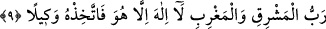

doğru hareketi ile... fakat hicabın zevâli ile tecellî eder. Hicap, kulun gözündedir yoksa
Allah nûru ile tecellî eder. Basiret ehline gizli kalmaz, mahalle göre tecellîden tecellîye
fark olsa da... Bu nedenle Peygamber (s.a.) şöyle buyururdu: “Allah tüm insanlara
tecellî eder. Ebû Bekr’e ise özel olarak tecellî eder.” [160]
Avamın tecellîsi birçok aynada bir tek hâlde, sûretin tecellîsi gibidir. Havass’ın
tecellîsi ise bir tek sûretin bir tek aynada tecellîsi gibidir. Peygamber (s.a.)’in sözü
buna işâret eder: “Benim Allah ile bir vaktim vardır” Bu tecellînin bu vakitte sâdece
Peygamber (s.a.)’e mahsus olduğu o vakitte başkasına tecellî etmediği gâyet açıktır.
Fakîr (Bursevî)’nin kanaâtine göre tam bu noktada kapalı bir durum vardır. O da
şudur; Peygamber (s.a.) Efendimiz Allah’ı zikir noktasında bütün vakitleri kullanıyor
olduğuna göre, iki âyetin ifâde ettiği üzere herşeyden ilişkisini kesip dâimâ Allah Teâlâ
ile başbaşa bulunduğuna göre nasıl oluyor da “çünkü gündüzde senin için uzun bir
meşguliyet var” âyet-i kerîmesinin ifâde ettiği üzere gündüzde meşguliyeti olabiliyor?
Herhalde bu sorunun bir kaç yönden cevabı olsa gerek.
1- Âyet-i kerîmede sürekli olarak zikrin ve tam anlamıyla Allah Teâlâ’ya yönelmenin
O’ndan başka herşeyden ilişkiyi kesmenin emredilmiş olması “ruhsat”tan “azimet”e
doğru bir terakkînin ifâdesi olsa gerek. Nitekim kâmil olan kimselerin durumu bunu
gerektirir.
2- Gündüzün meşgul olmak vâcip kabilinden değildir. Peygamber (s.a.) Efendimiz bu
emir karşısında, çalışıp hareket etmeye karşılık tevekkülü tercih edebilir ve böylece
bütün vakitlerini zikre tahsis etmiş olur.
3- Bir insanın zâhiren işle güçle meşgul olması, Allah’ı murâkabeden kendini kesmesi
anlamına gelmez. Nitekim Allah şöyle buyurur: “Onlar ne ticâret ne de alış-verişin
kendilerini Allah’ı anmaktan, namaz kılmaktan ve zekâtı vermekten alıkoyamadığı
insanlardır.” (en-Nûr, 24/37) Bir başka âyet-i kerîmenin anlamı şöyledir: “Ancak
şunlar öyle değildir: Namaz kılanlar ki onlar namazlarında devamlıdırlar.” (el-
Meâric, 70/22-23)
4- Bu emir, çeşitli durum ve şahıslar göz önüne alınarak verilmiş olabilir. Öyleleri
vardır ki işle, bâzıları vardır ki Allah’ı zikirle meşguldür. Meramını en iyi bilen
Allah’tır.
9. O, doğunun da bâtının da Rabbidir. O’ndan başka ilâh yoktur. Öyleyse yalnız
O’nun himâyesine sığın.
“O, doğunun da bâtının da Rabbidir.” O doğunun, bâtının ve ikisi arasında bulunan
her şeyin Rabbidir, yaratıcısıdır, sâhibi ve mâlikidir.
Keşfu’l-esrâr’da ifâde olunduğuna göre bu âyet-i kerîmede kışın ve yazın “doğu” ile